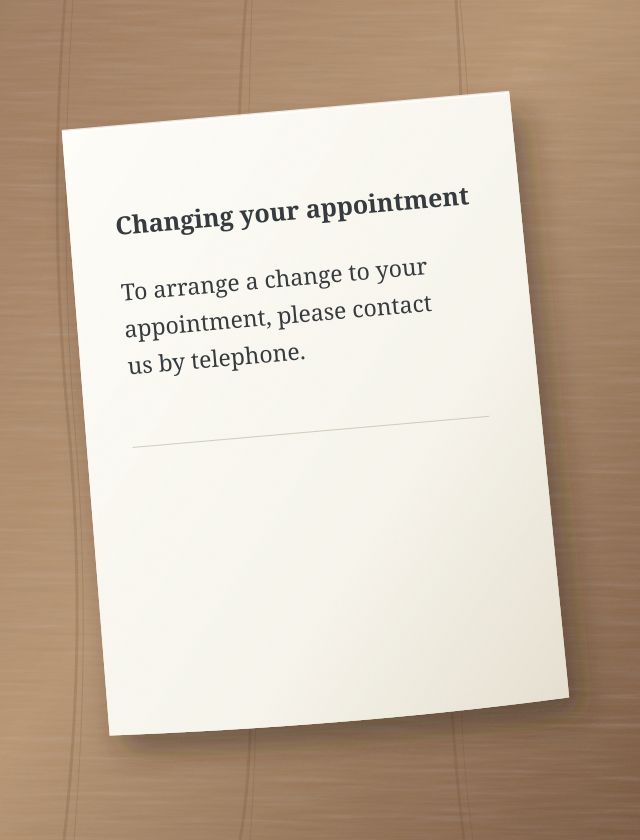
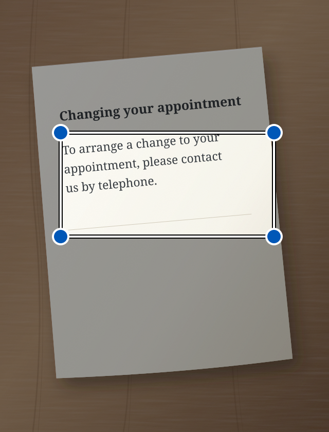

An official letter, a long message, complicated instructions. Sedno helps you understand them in simpler language. It can also correct your writing and read it aloud.
To arrange a change to your appointment, please contact us by telephone.
↳ Simplified text
Want to change your appointment? Call us.
An illustrative example of text simplification.
Easier to understand. Easier to act.
Simple language is for everyone.
We are creating Sedno mainly for people who are hard of hearing and people who find complex text difficult to understand. Simpler words can help any of us.
From words to meaning
Two simple steps.
01
Add text
Type, paste, take a photo or speak aloud.
02
Simplify or correct
Choose what you need. The result appears in the same field. You can keep editing it.
i AI can make mistakes. Check important information against the original.
See what to press
Sedno, step by step.
Each example shows one task. A circle shows what to press. An arrow shows what happens next.
These are simplified drawings of the screens. The texts are examples. The app may look slightly different.
Simplify typed text
Have a difficult message? Type or paste it into Sedno.
1 Type text and press “Simplify”.
Make sure Simplify mode is selected.
Sedno – simplify text:
To arrange a change to your appointment, please contact us by telephone.
Simplify
2 Read the simpler text.
The result appears in the same field. You can edit it.
Simplified text
Want to change your appointment? Call us.
AI can be wrong
Simplify
Simplify text from a photo
Have a letter on paper? Take a photo in Sedno.
1 Press the camera.
This opens the camera in the app.
Sedno – simplify text:
Type or paste text
Simplify
2 Press “Take photo”.
Hold your phone so the whole page and text are clear.
Take a photo of text

Take photo
3 Select the text and press “Simplify”.
Move the frame corners around the text you want to simplify.
Select text
Move the corners of the frame to select the text.

Simplify
4 Read the simpler text.
Sedno reads the text from the photo and simplifies it.
Simplified text
Want to change your appointment? Call us.
AI can be wrong
Simplify
The photo stays on your phone. Only the recognised text is sent to AI. If simplification fails, the recognised text stays in the field so you can edit it.
Simplify speech
Want to speak instead of typing? Choose Simplify mode.
1 Press the microphone.
If your phone asks for microphone access, allow it.
Sedno – simplify text:
Type or paste text
Simplify
2 Say the text aloud.
Speak in your selected language. Pause briefly when you finish.
Speak in your selected language
Sedno turns speech into text.
3 Read the simpler text.
After 1.5 seconds of silence, Sedno simplifies the recognised text automatically.
Simplified text
Want to change your appointment? Call us.
AI can be wrong
Simplify
Speech is recognised on your phone. You need Android 13 or later, support for this feature and a downloaded model for your selected language. Recording lasts up to one minute. Stop cancels recording.
Correct typed text
Want to fix mistakes in your message? Choose Correct mode before typing.
1 Type text and press “Correct”.
Change mode with the arrows above the large button.
Sedno – correct text:
i cant come to the meeting tomorow
Correct
2 Read the corrected text.
Sedno fixes mistakes. Check that the text says what you mean.
Corrected text
I can’t come to the meeting tomorrow.
AI can be wrong
Correct
Listen to corrected text
In Correct mode, your phone can read the text in the field aloud.
1 Press the speaker.
Correct the text first. Then press the speaker on the left.
Corrected text
I can’t come to the meeting tomorrow.
AI can be wrong
Correct
2 Listen to the text.
Your phone reads aloud. The stop button stops reading.
Your phone reads aloud
Listen to text from your phone.
Reading aloud works on your phone. Download an offline voice for your selected language in your phone settings.
Language
Choose your language.
Sedno supports 13 language variants. In the app, open the menu and choose Language. Your choice also applies to text, dictation and reading aloud. Sedno simplifies and corrects; it does not translate between languages.
Your text. Your control.
Privacy from the start.
Photos and audio stay on your phone. Only text is sent to AI.
Text is read from photos on your device. The photo itself is not sent.
Audio stays with you
Your phone recognises speech and reads text locally. Sedno does not send audio to its server or OpenAI. Only recognised text is sent for simplification.
AI processes text
Text for simplification or correction goes through the server to OpenAI. The Sedno server does not save its content.
History for 7 days
Encrypted history is saved only on your device for 7 days. You can delete it sooner. Signing out deletes history from your phone.
Sedno
Bringing words closer to people.
The app is being tested. A download link will appear here after release.